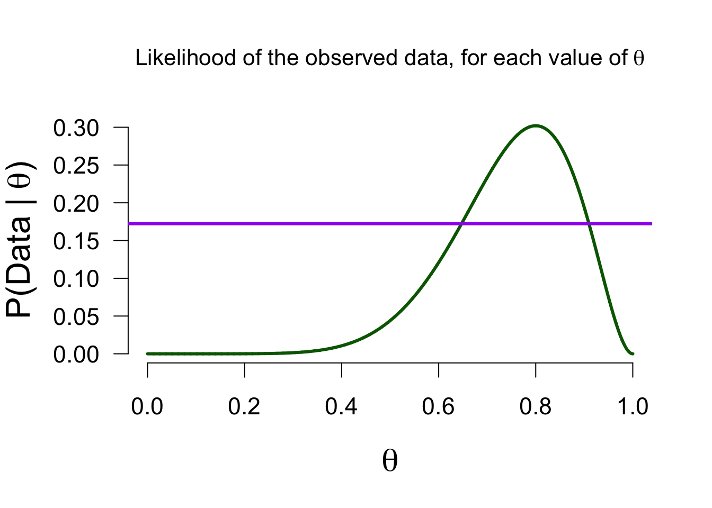
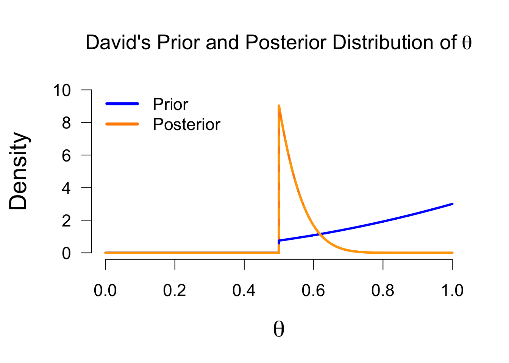

3 How do Models Estimate?
In the previous chapter, we saw that people/models can have different beliefs/hypotheses about a phenomenon. Sarah was quite certain that the true probability of the coin landing heads was \(0.5\), whereas David believed that the coin was biased towards heads, assigning more mass to higher values of \(\theta\). We saw how we can observe data to test which of the models predicted this data the best, using the Bayes factor. In this chapter, we will look at how individual models update their beliefs, as a result of observing the data. In doing so, this chapter will illustrate the core Bayesian concept of starting with prior knowledge/beliefs, updating this knowledge with observed data, to end up with posterior knowledge/beliefs about a parameter.
The following formula reflects this process: \[\begin{align} \label{eq-binomial-estimation} \underbrace{ p(\theta \mid \text{data})}_{\substack{\text{Posterior beliefs}}} \,\,\, = \,\,\, \underbrace{ p(\theta)}_{\substack{\text{Prior beliefs} }} \,\,\,\, \times \overbrace{\underbrace{\frac{p( \text{data} \mid \theta)}{p( \text{data})}}}^{\substack{\text{Prediction for specific }\theta }}_{\substack{\text{Average prediction} \\\text{across all } \theta's}}. \end{align}\] We have prior beliefs, which are updated by an updating factor, to form posterior beliefs. The updating factor indicates for each possible value of \(\theta\), how well it predicted the observed data, relative to all other possible values of \(\theta\). If this is still sounding rather vague, don’t worry - in this section we will demonstrate how this updating factor operates. However, before we discuss the updating factor, we go back to the start, and discuss the concept of prior knowledge/beliefs.
3.1 Models Have Beliefs
Belief is a funny word and we tend to associate the word with things that have seemingly little to do with science or statistics. However, we have beliefs about anything in the world – they might be quite weak, but we still have some starting point for reasoning about some phenomenon. For instance, I know very little about the number of penguins in the world, but I do know there are more than 0, probably more than \(1{,}000\), and fewer than \(1{,}000{,}000{,}000\) of them.1 I could characterize my very uninformed belief by means of a probability distribution, where the probabilty mass depicts how plausible I deem certain values. This is exactly the same as we did in the previous chapter by characterizing the different peoples’ beliefs about the fairness of a coin. In this case, even if we would know absolutely nothing about the coin in question, we still have some information about the parameter \(\theta\). For instance, we know that it will be between 0 and 1 because it is a probability. If we do not have any knowledge beyond this, we could reflect our prior belief about \(\theta\) by means of a uniform distribution, just like Alex did. In fact, we will now illustrate belief updating by looking at how Alex updates their beliefs, as a result of observing 8 heads out of 10 flips.
3.2 Updating Beliefs
As you might recall from Section 2.3.1, Alex was keeping an open mind about the values \(\theta\) - their prior distribution2 was a uniform distribution across all values between 0 and 1.
Now that we have formalized the prior beliefs about a parameter in the form of a probability distribution, we can start updating those beliefs with observed data. The belief updating factor consists of two parts.
3.2.1 The Likelihood
The first part of the updating factor, \(p( \text{data} \mid \theta)\), expresses the likelihood of the observed data for all of the values postulated by the model. Here, this means all values between 0 and 1. For instance, we look at the likelihood of the observed data, given a \(\theta\) value of 0.1. Just as before, we can use the binomial formula for this: \[\begin{align} \label{eq-binom-formula-two} \frac{n!}{k! (n-k)!} \theta^k\left(1-\theta\right)^{n-k}, \end{align}\] which for \(n = 10\), \(k = 8\), and \(\theta = 0.1\) gives 0. We can compute this value for all of the values between 0 and 1. If we do so, we can make the following graph that shows the likelihood of the data, for each value of \(\theta\):

As you can see, the likelihood is the greatest for \(\theta = 0.8\). This makes sense because the observed proportion is equal to \(0.8\). In short, this likelihood function depicts how well each possible value of \(\theta\) predicted the observed data. In the previous section we saw two people who postulated only a single value for \(\theta\). The likelihoods of their models can also be read from the above graph: Sarah (\(P(\text{data} \mid \theta = 0.5) =\) 0.0439) and Paul (\(P(\text{data} \mid \theta = 0.8) =\) 0.302).
It is important to note that the likelihood is not a probability distribution: its surface area does not sum to 1, and we therefore cannot use it to make probabilistic statements about the parameter (we can use the posterior distribution for this, at the end of this section).
3.2.2 The Marginal Likelihood
Now we can take a look at the second part of the updating factor: \(p( \text{data})\). This part is known as the marginal likelihood. In contrast to the first part, the marginal likelihood is a single number. Namely, it is the average of all the likelihoods, where the likelihood of each value is weighted by the prior belief placed on that value by the model. This is the same procedure as in the previous chapter (see Section 2.3). In fact, for all of the models, the marginal likelihood was indicated by the yellow bar: it is the likelihood of the observed data, weighted by each model’s specific beliefs. In the case of Alex’s model, the prior belief is equal across all values, so the marginal likelihood is “simply” the average likelihood.3 In this case, the marginal likelihood is equal to 0.0909 - precisely the height of the yellow bar in Figure 2.6.
We can use this average likelihood to see which possible values of \(\theta\) predicted the data better than average, and which values predicted the data worse than average: since the likelihood reflects the predictive quality of each value, the marginal likelihood reflects the average quality across all values. In the following figure, you can again see the likelihood function from Figure 3.2, but now with the marginal likelihood added:
By doing so, we have quite literally set the bar: values of \(\theta\) where the likelihood is greater than the marginal likelihood (approximately values between \(0.55\) and \(0.95\)) predicted the data better than average. In other words, \(p( \text{data} \mid \theta) > p( \text{data})\). This means that the updating factor (i.e., the ratio of the likelihood and marginal likelihood) will be greater than 1. This in turn means that the posterior belief for those values will be greater than the prior belief. As a result of observing the data, values between \(0.55\) and \(0.95\) have an increase in plausibility. The reverse holds for values whose likelihood is lower than the marginal likelihood: those values have suffered a decrease in plausibility as a result of the data. Perhaps another look at the Bayesian updating formula makes more sense now than it did at first: \[\begin{align} \underbrace{ p(\theta \mid \text{data})}_{\substack{\text{Posterior beliefs}}} \,\,\, = \,\,\, \underbrace{ p(\theta)}_{\substack{\text{Prior beliefs} }} \,\,\,\, \times \overbrace{\underbrace{\frac{p( \text{data} \mid \theta)}{p( \text{data})}}}^{\substack{\text{Prediction for specific }\theta }}_{\substack{\text{Average prediction} \\\text{across all } \theta's}}. \end{align}\]
We can visualize the aforementioned process. Again we look at the likelihood values, but now the values that see an increase/decrease in plausibilty are marked by the blue/vermillion arrows, respectively:
3.3 Updated Beliefs
We started this section with the prior beliefs of Alex’s model, which we updated by looking at which values predicted the data well, in order to form posterior beliefs. Just as with prior beliefs, our posterior beliefs are in the form of a posterior distribution. The figure below shows both distributions, including the vertical lines from Figure 3.4 to illustrate the boost/penalty in plausibility.

We have now updated Alex’s prior knowledge to posterior knowledge! The posterior distribution enables us to make probabilistic statements about values of \(\theta\) because it is a probability distribution.4 For instance, the median of this posterior distribution is \(0.764\), which means that under Alex’s model, there is a 50% probability that \(\theta\) is greater than \(0.764\). Or, we can use the posterior distribution to make an interval estimation. In the Bayesian framework, this is known as the credible interval. This interval entails taking the middle \(x\)% of the posterior distribution. For instance, we can take a 95% credible interval, which ranges from \(0.482\) to \(0.940\) in this case. This means that under Alex’s model, there is a 95% probability that the true value of \(\theta\) is between \(0.482\) and \(0.940\). Such a straightfoward interpretation is one of the strengths of the Bayesian framework, compared to the frequentist framework.
3.4 More Models
Up until this point, we have only looked at Alex’s model: it had a specific starting point (i.e., prior belief), which was updated with the observed data to form an ending point. However, in the previous chapter we saw that there are all sorts of different models. Each of those models have different prior beliefs (as reflected by their prior distributions). Even though the Bayesian knowledge updating procedure is exactly the same for all models, having a different starting point means that they also have a different ending point. Specifically, for each model, their prior distribution is different, and their marginal likelihood is different (as indicated by the yellow bars in the Figures in the previous chapter).
The models shown so far differ in their “learning ability”. Generally, the uninformed model is a great learner: because it has a relatively weak starting point, it lets the data speak for itself. This is reflected by the posterior distribution being highly similar to the likelihood.5 In order to illustrate the differences in the models, and how they learn, we can go over how Sarah’s model and David’s model learned from the data.
3.4.1 Sarah’s Learning Process
While Alex was casting a very wide net, Sarah was doing the opposite. Rather than considering all values of \(\theta\), Sarah was absolutely sure that there was only one possible value of \(\theta\), namely \(0.5\).
In other words, Sarah’s prior belief about \(\theta\) was quite fanatical. The prior density of all values other than 0.5 is 0, and the prior density at 0.5 is infinitely high (since infinity cannot be conveniently shown in a figure, we use the arrow to indicate infinity). So what happens when someone is absolutely convinced that \(\theta = 0.5\), and then gets presented with data? Perhaps another look at the Bayesian updating formula can give some insight: \[\begin{align} \underbrace{ p(\theta \mid \text{data})}_{\substack{\text{Posterior beliefs}}} \,\,\, = \,\,\, \underbrace{ p(\theta)}_{\substack{\text{Prior beliefs} }} \,\,\,\, \times \overbrace{\underbrace{\frac{p( \text{data} \mid \theta)}{p( \text{data})}}}^{\substack{\text{Prediction for specific }\theta }}_{\substack{\text{Average prediction} \\\text{across all } \theta's}}. \end{align}\]
Since Sarah’s prior density for any value that is not 0.5, is equal to 0, that means that the posterior density for those values will also be 0. Because of the multiplication by 0, the updating factor is therefore completely ignored. As for the pior density at the value 0.5 - it too gets mutliplied by the updating factor, but just as anything multiplied by 0 is 0, anything multiplied by infinity is infinity. In other words, a model like Sarah’s is completely blind to the data, since she is alread so convinced that \(\theta = 0.5\).6 The posterior will therefore be exactly the same as in fig-sarah-model-binomial above.
Let’s define the marginal likelihood once more: Sarah has prior beliefs about \(\theta\), reflected by the prior mass in Figure 3.6. Each of these values has a certain match with the observed data (i.e., the likelihood). The marginal likelihood is then the average of all those likelihoods, weighted by the prior mass assigned. This weighting by prior mass makes each model’s marginal likelihood different from each other, because each has their own unique prior beliefs. If we were to look at the updating factor for Sarah, we would see that Sarah’s marginal likelihood is simply equal to the likelihood of the data for \(\theta = 0.5\) (i.e, \(P(\text{data} \mid \theta = 0.5) =\) 0.0439) because that is the only value that Sarah assigned any prior mass to.
3.4.2 David’s Learning Process
Somewhere in the middle of Alex’s ambivalence and Sarah’s fanaticism, there is David’s prior belief that only values between 0.5 and 1 are possible, and that values closer to 1 are more plausible than values closer to 0.5. As you can see in Figure 3.7 below, this means that values between 0 and 0.5 are assigned 0 prior density - a process known as truncation. Truncation makes a model one-sided, since only values to one side of 0.5 have been assigned prior density, while the other side is set to 0. From Sarah’s learning process we saw that this means that David’s posterior beliefs will also be 0 for values below 0.5. So what does David’s learning process look like?
Just as before, we start with the prior beliefs, update these with the updating factor (which values in the model predicted the data better/worse than average?), to form posterior beliefs. The difference between the different models lies in their different starting points (prior beliefs), but also their updating factor differs. Specifically, the likelihood stays the same (Figure 3.2), but the marginal likelihood differs. As we see in Figure 2.5, David’s marginal likelihood for the outcome of 8 heads is approximately 0.174.
In the previous chapter we saw how we can use the ratio of the marginal likelihoods of two models (i.e., the Bayes factor) to do model comparison. In this chapter we focus on individual models and how they estimate/learn about the parameter. In that context we use the marginal likelihood to see which parameter values in the model predicted the data better/worse than average, in order to see which values receive a boost/penalty in plausibility. The figure below illustrates this mechanism - note that the likelihood is exactly the same as for other models, but the marginal likelihood (indicated by the purple bar) is different.

When we apply the Bayesian knowledge updating, we arrive at David’s posterior knowledge. As before, the values that predicted better than average will have a higher posterior density than prior density, while the reverse holds for values of \(\theta\) that predicted the data worse than average. Note that David excluded some values of \(\theta\) a priori (similar to Sarah), namely those values between 0 and \(0.5\). Since the prior density for those values is 0, the posterior density will also be 0, regardless of the observed data. For David’s posterior distribution, the median equals \(0.801\), and the 95% credible interval ranges from \(0.568\) to \(0.95\). Although this is fairly similar to Alex’s posterior statistics (median \(=0.764\), 95% CI = \([0.482, 0.940]\)), they are not identical because both started with different prior beliefs and so will have different posterior beliefs. The interpretation of the median and CI will be the same, but now conditional on David’s model: under David’s model, there is a 95% probability that \(\theta\) is between 0.546 and 0.95.
3.5 Prior Distribution in Bayesian Parameter Estimation
We have now seen three different posterior distributions, for the three people (and their different prior beliefs) under consideration so far. As we have seen, the posterior distribution of Sarah is identical to her prior distribution, since she was so convinced about \(\theta = 0.5\). The posterior distributions for David and Alex are pretty similar, although not identical. This reflects a general mechanism in Bayesian parameter estimation: the more uninformed a prior distribution is, the more it lets “the data speak for itself”. In other words, the more peaked (i.e., informed) a prior distribution is, the more data are needed to “overthrow” such a strong prior conviction. In Bayesian inference for a proportion, this mechanism is neatly reflected by how the prior and posterior distribution, as well as the data, are built up. To illustrate, we can take a closer look at how we usually specify a prior distribution for a proportion.
3.5.1 The Beta Distribution
In Bayesian inference, the prior distribution can be any probability distribution (depending on which models you want to compare, or which model is most suitable for estimation). One requirement for the prior distribution is that it matches the domain of the parameter. In the case of a proportion, this means that the prior distribution ranges from 0 to 1. One such family of distributions is the beta distribution. The beta distribution can take on many different shapes, based on the value of its two shape parameters \(\alpha\) and \(\beta\) (sometimes also just written in Latin, a and b). Setting these shape parameters changes how the beta distribution looks. You can play around in this applet or this applet, to get an idea.
Basically, these are the dynamics:
- Setting \(a = b\) creates a symetric distribution, with \(a = b = 1\) giving a uniform distribution.
- As the value of \(a = b\) increases, more and more probability mass will be centered in the middle (at 0.5), with Sarah’s prior distribution as the limit (\(a = b = \infty\)).
- When \(a > b\), more probability mass will be to the right of 0.5, while the reverse holds for \(a < b\).
- When \(a < 1\) and \(b < 1\), more mass will be towards the tails of the distribution (close to 0 and 1). Note that \(a\) and \(b\) need to be greater than 0.
3.5.2 Beta Interpretation
In the context of a prior distribution for a proportion, the \(a\) and \(b\) can be interpreted as previously observed heads and tails. For instance, having a uniform prior distribution (like Alex) can be seen as having observed 1 heads and 1 tails already. David’s prior distribution is in fact a beta distribution with \(a = 3\) and \(b = 1\), truncated for lower values (meaning values \(< 0.5\) receive 0 probability mass). This corresponds to David having already seen 3 heads and 1 tails. In order to obtain Sarah’s prior distribution, we would have a beta distribution with \(a = b = \infty\), which means that Sarah believes as if she has already seen incredibly many heads and tails.
In addition to the prior distribution, the posterior distribution for \(\theta\) is also a beta distribution. Specifically, it is a beta distribution where \(a\) is equal to the \(a\) of the prior distribution, plus the number of observed succeses/heads. The \(b\) is equal to the \(b\) of the prior distribution, plus the number of observed failures/tails. For instance, Alex’s posterior distribution (Figure 3.5) is a beta distribution with \(a = 1 + 8 = 9\), and \(b = 1 + 2 = 3\), while David’s posterior distribution (Figure 3.9) is a (trunctated) beta distribution with \(a = 3 + 8 = 11\), and \(b = 1 + 2 = 3\). Representing the knowledge updating in terms of the beta distribution also illustrates how Sarah’s prior and posterior distribution are the same: her posterior \(a\) is equal to \(\infty + 8 = \infty\), and her posterior \(b\) is equal to \(\infty + 2 = \infty\).
3.5.3 Two-sided vs One-sided Estimation
Typically, when applying Bayesian estimation, we use the most uninformed model, since this model has the least bias in it. In addition, a two-sided model is generally used because the one-sided model can give misleading estimates in case it predicts the wrong side. For instance, if the true value of \(\theta\) equals 0.2, David will never assign any posterior mass to it, no matter the evidence. If we imagine observing 10 tails and 1 heads, David’s posterior distribution will look as follows:

While we can still take a 95% credible interval from this posterior, it is clear that it gives a misleading estimate (the 95% CI here will be from 0.5 to 0.665) . Since David’s model only considers values between 0.5 and 1, the values that receive a boost in plausibility are those values as close as possible to the observed proportion (\(1/11\) = 0.091), so all posterior mass “piles up” at its truncation threshold. A two-sided model has a lot more flexibility and will simply follow along in the direction that the observed proportion is in (greater or smaller than 0.5).
3.5.4 An Endless Loop
What would happen if tomorrow we gather the same people again, and collect a new set of data? On this new day, they will have prior distributions equal to the posterior distributions of today, ready for a new round of knowledge updating. As more and more data accumulate (either spread over multiple days, or updated all at once), the starting prior distribution grows less influential. However, the stronger/informed the prior, the longer this process takes.
3.6 Relation to Hypothesis Testing
So far we have been talking about models. In order to conduct a hypothesis test, we can take several of these models and compare their predictive performance through the Bayes factor (see Section 2.2 and Section 2.4. Typically, the model with extreme conviction about a “null value”7, which in this case would be Sarah’s model. Then, what we call the alternative hypothesis can be any other model that corresponds to the theory one wants to test: all models we have seen so far make some specific statement about plausible values of \(\theta\). The Bayes factor simply tells us which model predicted the data the best: it is a relative metric that compares two models at a time.
3.6.1 The Savage-Dickey Density Ratio
When employing such a null/alternative hypothesis setup, there exists a convenient computational trick to obtain the Bayes factor of one alternative model over the null model. When we take the updating of the alternative model, for instance Alex’s, we can take the prior density at the value of testing (\(0.5\)) and the posterior density at the value of testing. The ratio of these two values is equal to the Bayes factor comparing Alex and Sarah’s models. The prior density at 0.5 equals 1 (i.e. \(P(\theta = 0.5) = 1\)) and the posterior density at 0.5 equals approximately 0.5 (i.e., (\(P(\theta = 0.5 \mid \text{data}) \approx 0.5\))), so their ratio is approximately \(1 / 0.5 = 2\), in favor of the alternative hypothesis (i.e., \(\text{BF}_{10} \approx 2\)). The Savage-Dickey density ratio also implies the following: when the prior density is higher than the posterior density at the value of testing, we will find evidence in favor of the alternative hypothesis (the magnitude of evidence depends on how much lower the prior density is). This makes sense: the value of testing is the only value that is considered by the null hypothesis, so if that value has suffered a decline in plausibility as a result of the data, then that means the null hypothesis as a whole did not do well. Figure 3.10) below shows Alex’s prior and posterior distribution, with the grey dots indicating the density ratio.
For a different point of testing, for instance \(0.8\), we can take the Savage-Dickey density ratio at that point. With a test value of 0.8, the null model becomes equal to Paul’s model (his prior distribution was concentrated on the value 0.8), so we are comparing Alex’s model to Paul’s model. In Figure 3.10, the density values are indicated by the purple dots. Here, the null model (i.e., Paul’s model) did very well, since \(0.8\) fits the observed data very well, as indicated by the posterior density being much higher than the prior density at that point (\(\text{BF}_{01} \approx 3\)).
3.7 Concluding Thoughts
In this chapter, we have seen how different models learn from the same data to form posterior beliefs. These posterior beliefs about the parameter can then be used to make an estimation (i.e., a probabilistic statement) of the parameter in the form of a \(x\%\) Credible Interval, or posterior median.
We have seen several key ideas:
- Prior knowledge (i.e., what a model believes, before seeing the data) is characterized by a probability distribution: in the case of proportion \(\theta\), we typically use the beta distribution
- Prior knowledge is then updated with the updating factor, which consists of the likelihood of the observed data, and the average likelihood for that model
- Values of \(\theta\) that predicted the data well will receive a boost in plausibilty (posterior density > prior density) and values that predicted the data poorly will receive a penalty in plausibilty (prior density > posterior density)
- The posterior distribution reflects our posterior knowledge (i.e., what a model believes, after seeing the data), which we use to make an estimate of the parameter
- Strong prior convictions will need more data to be overthrown.
How would you characterize your beliefs about the number of penguins in the world? What would your belief distribution look like?↩︎
The prior distribution is the offical term for the probability distribution that quantifies a model’s prior beliefs about a parameter.↩︎
Technical sidenote: integrating over the likelihood will give the marginal likelihood for Alex.↩︎
Note the contrast to the sampling distribution, which is a distribution of the sample statistic \(\hat{p}\), rather than the parameter.↩︎
Remember that the likelihood is not a probability distribution. You can see Bayesian statistics as a “trick” to turn the likelihood into a probability distribution (i.e., the posterior distribution), so that you can make probabilistic statements about the parameter!↩︎
I feel like there is a real-life analogue to be found here somewhere…↩︎
The null value is typically the value that implies no effect, such as 0.5 for a proportion, or 0 for a correlation or t-test.↩︎